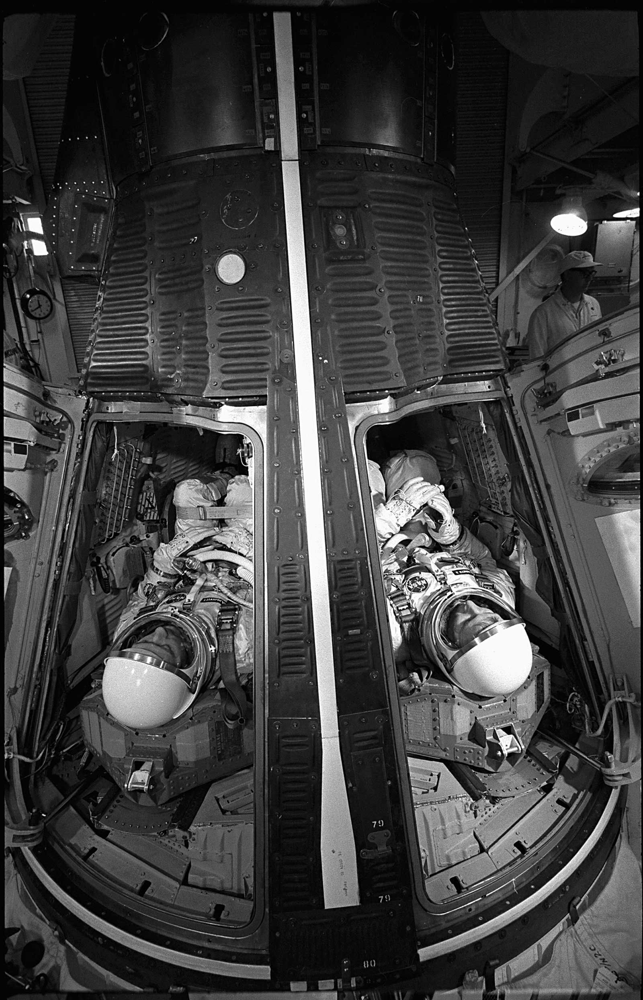
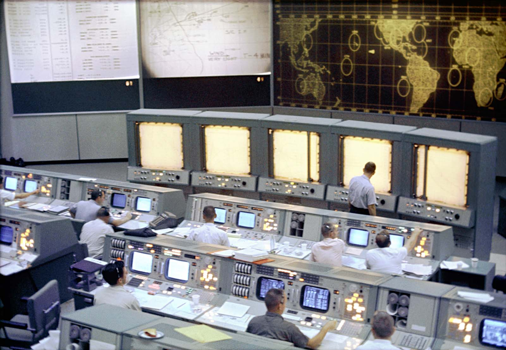
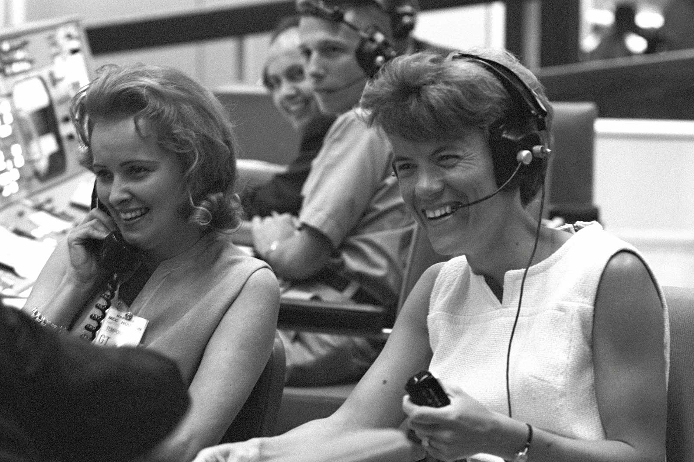
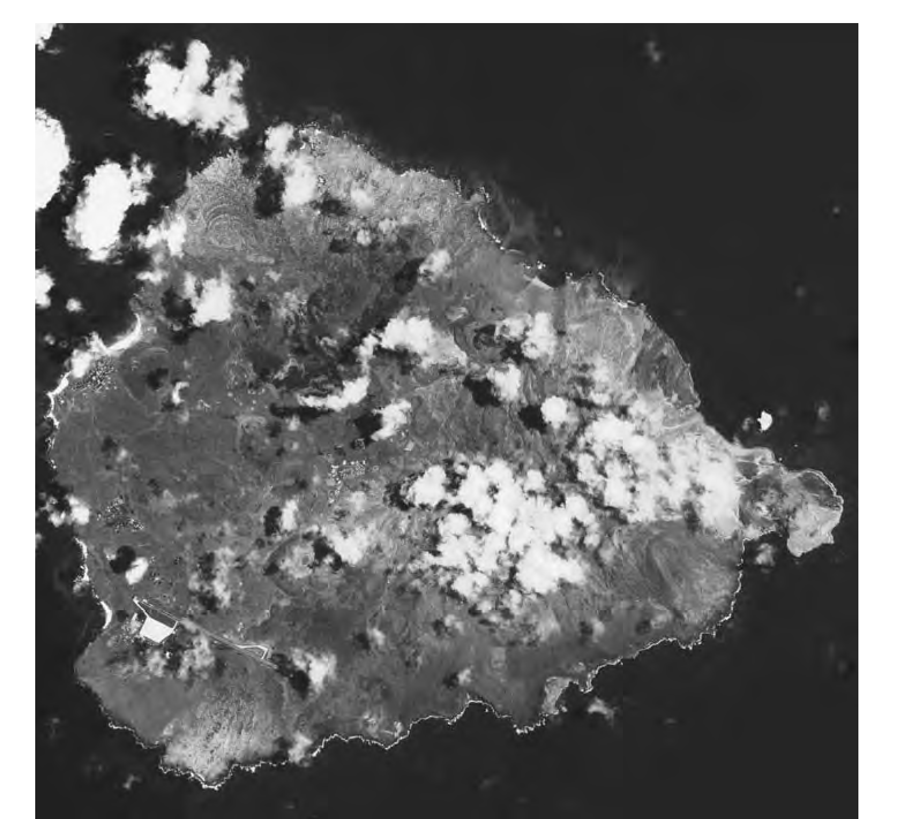
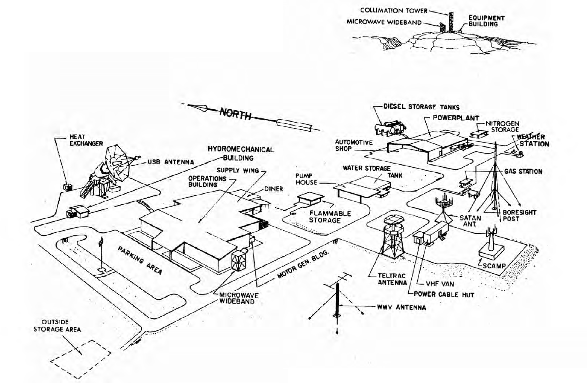
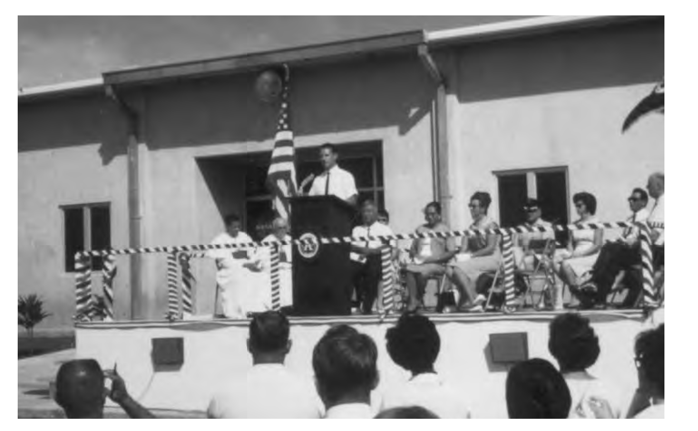
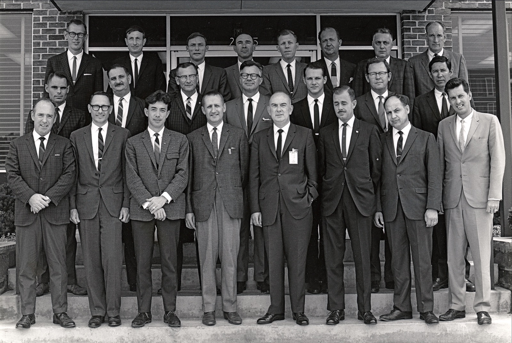
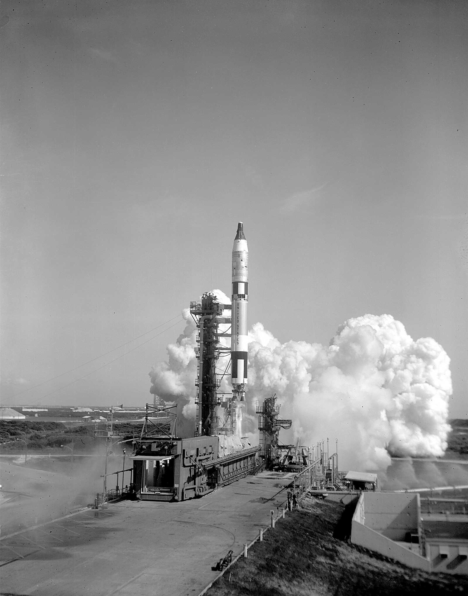

Chapter 4 - Preparing for the Moon
Despite the significant progress made during Project Mercury, in 1963 the United States still trailed (and trailed badly) the Soviet Union in terms of flight hours spent in space. The six Mercury missions flown between May 1961 and May 1963 had only accumulated a total of 53 hours in space. Thirty-four came on Mercury Atlas 9, Gordon Cooper’s 22-orbit program finale. Of the six flights, two were suborbital. In contrast, Soviet Vostok cosmo nauts had accumulated a total of 382 hours in space on six missions. Valentina Tereshkova, a 25-year-old textile worker from Yaroslavl who became the first woman in space in June 1963 on Vostok 6, was in orbit 17 hours longer than all the American astronauts put together.
It was clear by now that space had become the new global high ground for ideology and Cold War international prestige. “Now let the other countries try to catch us. Let the capitalist countries catch up with our coun try which has blazed the trail into outer space,” was the unabashed challenge from Soviet Premier Nikita S. Khrushchev upon Gagarin’s triumphant return from space.1
A week after the Gagarin flight, in a White House correspondence dated 20 April 1961, President John F. Kennedy gave Vice President Lyndon B. Johnson a directive. It had a definite sense of urgency. The President wrote:
I would like, for you as Chairman of the Space Council, to be in charge of making an overall survey of where we stand in space. Do we have a chance of beating the Soviets by putting a laboratory in space, or by a trip around the Moon, or by a rocket to land on the Moon, or by a rocket to go to the Moon and back with a man? Is there any other space program which promises dramatic results in which we could win?2
Kennedy wanted results. Even more so, he wanted something dramatic, something that would capture the imagination of Americans everywhere to allow the U.S. to regain, in no uncertain terms, the upper hand in space.
To answer the President’s directive, Johnson and Dr. Jerome Wiesner, Kennedy’s science advisor, turned to NASA. Anticipating this, the Agency’s top management triad of James E. Webb, the new Kennedy-appointed Administrator, Deputy Administrator Hugh L. Dryden and Associate Administrator Robert C. Seamans, Jr. had been working to pri-oritize a list of Agency objectives since the previous fall. To this end, they commissioned a study on 6 January 1961, chaired by George M. Low of the Manned Lunar Landing Task Group, to determine the technical, schedule, and cost requirements of a human lunar program. Table 4-1 lists the conclusions reached by the Low study.
Spurred on by these generally encouraging findings, Kennedy went forth with the commitment before a joint session of Congress on 25 May 1961, of “achieving the goal before the decade is out, of landing a man on the Moon and returning him safely to the Earth.” This was a bold move by a young President who had been in office for just five months. While the technical basis for his decision came from the NASA study, Kennedy felt that this gamble was one in which the United States had a chance to win and that it was sufficiently bold and dramatic enough to invigorate the nation and place America once again on the world center stage.
| Mission | Spacecraft | Launch Vehicle | Date |
|---|---|---|---|
| Earth Orbiting 1 Man, Short Duration | Mercury | Atlas | 1961 |
| Earth Orbiting 3 Men, Long Duration | Apollo "A" | Saturn C-1 | 1965 |
| Circumlunar, Lunar Orbit 3 Men | Apollo "B" | Saturn C-2 | 1967 |
| Manned Lunar Landing | |||
| Orbital Operations | Apollo "B" | Saturn C-2 | 1968-1969 |
| Direct Approach | Apollo "B" | Nova | 1970-1971 |

Before astronauts could fly to the Moon, many questions still had to be answered. For instance, what features of the Mercury spacecraft needed to be improved? Can a spacecraft be made with greater endurance so it can orbit Earth longer to find out the physiological affects of long-duration missions required to travel to the Moon and back? Can two spacecraft rendezvous and dock in space? Can astronauts work effectively outside the protection of his spacecraft? Even though America had decided to go to the Moon, NASA was not yet ready. To bridge the rather significant technology gap between Mercury and the emerging Apollo program, the Agency endorsed plans for a two-person spacecraft program called Mercury Mark II in December of 1961. The following spring, the name was changed and the program was officially christened Project Gemini—after the twin gods of Greek mythology— befitting of NASA’s new two-person spacecraft.4
GSFC engineers made their first presentation to the newly formed Manned Spacecraft Center (MSC) on the outskirts of Houston in the first week of June 1962. The topic was technical requirements they would like to see implemented in a Gemini network. These included:
- Unification of all command,telemetry,and radio signals onto a single carrier frequency.
- Conversion from analog to the newer and much more bandwidth efficient Pulse Code Modulation (PCM) digital telemetry.
- Use of two acquisition aids at each tracking station (one for the Gemini spacecraft and one for the unmanned Agena docking target) and the ability to slave the radar to either vehicle.
- Modification of network station computers to accommodate processing both command uplink and telemetry downlink.5
Consumed with their primary job of developing the new two-seat Gemini spacecraft, MSC was lukewarm to the proposed changes. In their mind, they were just too much of a departure from what had just been done successfully on Mercury. Houston’s thinking was correct. The Goddard suggestions, taken collectively, did in fact represent a major change in the way tracking and data acquisition would be done. The proposed technique was a harbinger of the (Unified S-Band) system that would later be used on the Apollo spacecraft. USB was revolutionary in its time, enabling spacecraft command, telemetry, voice, and television to all be transmitted using a single, combined data link. The technique was not entirely new, however, to NASA as the DSN had used USB since 1958.
The proposed changes broke ground with the conservative reliance on time-tested technologies such as analog telemetry, which had been in use since the 1940s. By the mid-1960s, digital systems had been under research at the White Sands Missile Range for some time. NASA had even tried it experimentally at the Bermuda Station on the final Mercury mission. After initial discussions, Houston agreed to make the switch to PCM telemetry but objected to the others on the grounds that complete dependence upon a single TT&C link could lead to total mission failure if just part of the system failed.
Most of the Goddard proposals were in effect rejected. Despite this initial disagreement, GSFC knew what they had and was convinced it would work. The two NASA Centers held a series of technical interchange meetings and working groups to discuss the changes over the next 12 months, with Greenbelt making its case for the new tracking and communication technique. By June 1963, Houston was persuaded for the most part, agreeing to the proposed changes but with one important stipulation: that computers at network stations be employed only for telemetry processing but not for commanding. The idea was to preclude inadvertent or erroneous commands from being uplinked to the spacecraft in the event of a computer anomaly.6
One Gemini guideline that had a significant effect upon the MSFN was the relaxation of the 10-minute “dead-time”, which was now relaxed to one primary ground contact per orbit. Astronaut performance and the Mercury spacecraft had shown that having the ability to remotely send commands to the spacecraft from every network outpost, while nice, did not turn out to be the necessary requirement that it was thought to be. With this decision, the MSFN no longer had to spread its valuable resources equally over the globe. It could now concentrate on a limited number of primary sites supplemented with a number of secondary stations. In this arrangement, primary stations were those that had command uplink capability in addition to voice, radar and telemetry while secondary stations did not have command capability.7
Another change in network philosophy was network centralization in terms of mission control and mission computing. Back before John Glenn’s first orbital flight, many had simply presumed, even at Goddard, that some of the communication links between Mission Control and the tracking stations would be lost, at least intermittently. But this did not turn out to be the case at all as Mercury proved that reliable network communications were the rule, not the exception. NASA then had the confidence to remove flight controllers from the network stations and centralize all control activities at the new MCC in Houston. As a precaution, Capcoms remained at a few of the primary ground stations where there was still lingering skepticism on the part of MSC about the reliability of communications.
At least this was the official position coming out of Houston. It was well known within NASA circles that such assignments were a way for Donald K. “Deke” Slayton, head of Flight Crew Operations at MSC, to give his astronauts some much needed rest and relaxation at attractive places. As former Flight Director Eugene F.Kranz put it,“Slayton would send astronauts out at the very last moment to all of the sites that were generally good locations to go to—Bermuda, Hawaii, California,Australia.”8 This was generally not a problem for those working at the station,except when the astronaut crossed the line and began “throwing his weight around” as happened when Pete Conrad showed up in Australia on Gemini 3 saying that Slayton wanted him to be in charge during the mission.
The other network centralization implemented by GSFC involved the computer system. On Project Mercury, computing was performed in Greenbelt, Maryland. The only other network computers were at the Florida launch site itself and at Bermuda. This architecture—identical to what was used on Mercury—continued through the first Gemini mission (Gemini 3) in March 1965. As preliminary telemetry processing plans were first being laid for Gemini, this was the computing baseline computer that engineers worked from. A rather limited architecture, it was capable of processing and sending only four groups of spacecraft health and status parameters back to the MCC for monitoring and evaluation. To meet the increased data requirements of the more complex Gemini spacecraft, the MSFN now had two UNIVAC 1218 computers installed at each primary outpost. Additional submarine (ocean-floor) cables were also laid to meet the increased data flow demands. These improvements had the aggregate effect of greatly improving real-time data decommutation and processing allowing much more spacecraft information to now be sent to Mission Control than was possible on Mercury. Former MSC network chief Lyn Dunseith captured it succinctly when he said, “Voice, telemetry, command, and tracking data acquired by the Goddard managed communications and tracking network represented some of the most critical information available to the flight controllers at their display consoles”9
As network changes continued and Gemini missions took place, Houston gained more and more confidence in the network. Take the role of computers. Two U1218 computers were originally set up in dual redundant mode, operating in parallel to process telemetry data. As they began demonstrating their reliability and as spacecraft TT&C burdens increased, MSC relented, finally agreeing to let computers handle both telemetry and command (“fire retro rockets,” “turn on telemetry transmitters,” “ring astro alarm,” etc.). The digital processing capability of the U1218s made a dramatic jump during Gemini, increasing from 2 input/output lines to 32, with transmission rates reaching the then state-of-the-art 50,000 bits-per-second. Eventually, one computer was tasked entirely to telemetry while the other to commands.10

Project Mercury had shown mission control and mission computing to be so inter-related that the Office of Tracking and Data Acquisition at NASA Headquarters decided that they should be best managed by the same Center. Since the MCC was going to be at the MSC, the MSFN computing system was reassigned to Houston. Gemini 4 in June of 1965 marked GSFC’s finale as the primary computing center for NASA human spaceflight. On this flight, MSC computers were placed in a so-called “ghost mode” where they were checked out and accepted in preparation for its upcoming assumption of primary computing duties. When Gemini 5 left the launch pad on 21 August 1965, the MSC in Houston officially took over the mission computing function from Goddard. From that point on, the GSFC system was relegated to a backup role and employed mainly for network development, testing, and mission simulations, a role it performed until the end of Apollo.11
Mercury flights had been very basic, limited to circular, low-Earth orbits of less than 320 kilometers (200 miles) in altitude. Gemini, though, would fly many high apogee elliptical orbits, some as far as 1,600 kilometers (1,000 miles). To improve tracking at these altitudes, RCA FPQ-6 skin-track C-band radars were added to the network. One of the most accurate and powerful tracking radars of the time, the FPQ-6 had an output power of 2.8 mega-watts and was effective out to 60,000 kilometers (37,000 miles). All equipment was housed in a two story building. Its operation was fairly simple. It could be operated from a single console by two or three technicians depending on the tracking mode used. A team of at least seven people was required, however, for maintenance of the equipment. The reflector was an 8.8-meter (29-foot) dish and the combined weight of the moving parts and hydraulic drive was over 30 tons, controllable using a small joystick on the control console. For rigidity and stability, the antenna tower foundation extended nearly 10 meters (30 feet) underground.12 The older VERLORT and FPS-16 radars used on Mercury were kept in service. This provided redundancy so that, in the event of spacecraft beacon failure, the MSFN could still skin-track. With these combined capabilities, the potential for any tracking losses or blackouts was greatly reduced, if not eliminated altogether.13
Lighter TELTRAC telemetry antennas and associated telemetry equipment were also installed across the MSFN to serve as acquisition aid for simultaneous tracking of both the Gemini and the unmanned Agena docking target during rendezvous missions. A major objective of Project Gemini was to demonstrate and test-out the rendezvous procedures being developed for the upcoming Apollo lunar missions.These missions required the Command Module (CM) and the Lunar Module (LM) to rendezvous with each other as the latter returned from the surface. On Gemini, the unmanned Agena spacecraft served as a surrogate rendezvous and docking target. For command uplink, the network continued to rely on FRW-2 UHF transmitters using 10 kilowatt high-power amplifiers.14
Communications between the MCC and the ground stations also became much more efficient during Gemini. Air-to-ground voice transmissions, in particular, garnered special attention. Former Project Gemini Director at NASA Headquarters, William C. Schneider, recalled that
Early in Project Gemini . . . we found that voice communications from the spacecraft left much to be desired.A near-perfect mission received bad notices because the people on Earth couldn’t hear what was happening.So we went to work to fine-tune the system to be ready for the more advanced Gemini and Apollo flights.15
This is true even today. Despite crystal clear digital videos from space, the quality of voice transmissions—which is limited by the micro-phones worn by the astronauts—still leaves room for improvement.
The first stations to transmit telemetry back to Houston were Bermuda and the early-ops sites downrange of the Kennedy Space Center (KSC) at Grand Bahama, Grand Turk, and Antigua. When Houston supported its first mission in June 1965, the telemetry transmission rate from Bermuda to Houston was 2,400 bits-per-second (2.4-kbps). Commands could be sent from the MCC to remote ground stations in one of two ways. In one method, used for routine or so-called housekeeping commands, Mission Control teletyped the command sequences prior to a scheduled pass over a given site which were then stored at the station. Later on as the orbiting spacecraft passed over the station, an onsite technician would uplink them up to the craft. For more urgent matters, Houston could send command messages over the 2.4-kbps master circuit to KSC for immediate relay via dedicated government priority “T-1” landlines and submarine cables to the next MSFN station in the spacecraft’s ground track.
Communications between Houston and NASA tracking ships were enhanced whenever possible by collocating NASA vessels with Navy communication ships. This provided a network of UHF daisy-chain, relay points from sea-to-land and vice versa. The Coastal Sentry Quebec, a converted Class 1 World War II freighter, was usually situated in the Western Pacific covering the South Pacific gap between Australia and Hawaii. The Air Force Eastern Test Range and Western Test range operated the Rose Knot Victor and Range Tracker, which were moved around in the South Pacific, Atlantic, or Indian Oceans depending on a specific mission’s requirement.16

One final measure of the increasing capability of the ground communication network was at GSFC itself, where the SCAMA (Switching, Conferencing, and Monitoring Arrangement) was updated. SCAMA was the telephone switchboard at the Center that handled all voice communications from around the world. In the early days of Project Mercury, it could simultaneously conference only 10 worldwide voice circuits. This number jumped to 220 when the Mercury Space Flight Network became the Manned Space Flight Network for Project Gemini.18
| Station (location) | Abbreviation | Network Role* | Ownership** | Remarks |
|---|---|---|---|---|
| North America | ||||
| Canaveral (Kennedy Space Center, Florida) | CNV | Primary | NASA | Launch Control Center |
| Texas (Corpus Christi, Texas) | TEX | Primary | NASA | Located at the abandoned Rodd Naval Auxiliary Air Station; an original Mercury station |
| Eglin (Florida) | EGL | Secondary | DOD | Located at the Air Force Eglin Gulf Test Range 50 miles northwest of Panama City, FL; an original Mercury station |
| Goddard Space Flight Center (Greenbelt, Maryland) | GSFC | Secondary | NASA | Overall network responsibility; development and test facility |
| Guaymas (Mexico) | GYM | Primary | NASA | Located in northwest Mexico on the shores of the Gulf of California; an original Mercury station |
| Houston (Texas) | HOU | Primary | NASA | Manned spaceflight Mission Control Center |
| California (Point Arguello, California) | CAL | Primary | DOD | Located some 40 miles north of Santa Barbara, part of the Navy Pacific Missile Range; an original Mercury station |
| Wallops (Wallops Island, Virginia) | WLP | Secondary | NASA | Training and test facility just off the shores of Virginia |
| White Sands (New Mexico) | WHS | Secondary | NASA | Located on the grounds of the Army's White Sands Missile Range near Alamogordo; an original Mercury station |
| Atlantic | ||||
| Antigua (British West Indies) | ANT | Secondary | DOD | Air Force ETR station |
| Ascension (Ascension Island, United Kingdom) | ASC | Secondary | DOD | Air Force ETR station |
| Bermuda (United Kingdom) | BDA | Primary | NASA | Go/No-Go decision site; an original Mercury station |
| Grand Bahama (British West Indies) | GBI | Secondary | DOD | Air Force ETR radar site |
| Grand Canary (Spain) | CYI | Primary | NASA | Located 120 miles off the African coast; critical abort tracking site; an original Mercury station |
| Grand Turk (British West Indies) | GTK | Secondary | DOD | Air Force ETR radar site |
| Africa | ||||
| Kano (Nigeria) | KNO | Secondary | NASA | Original Mercury station in west-central Africa |
| Pretoria (South Africa) | PRE | Secondary | DOD | Air Force ETR station |
| Tananarive (Malagasy Republic) | TAN | Secondary | NASA | Replaced the Zanzibar Station; last land site before crossing the Indian Ocean to Australia |
| Australia | ||||
| Carnarvon (Western Australia) | CRO | Primary | WRE | Collocated with the NASA STADAN site |
| Perth (Western Australia) | MUC | Secondary | WRE | The original Mercury site at Muchea was used until Perth became operational; call sign was retained |
| Woomera (South Australia) | WOM | Secondary | WRE | Original Mercury station; collocated with STADAN site |
| Pacific | ||||
| Canton (Kiribati Republic) | CTN | Secondary | NASA | Original Mercury station |
| Hawaii (Kauai, Hawaii) | HAW | Primary | NASA | Original Mercury station |
| Ships | ||||
| Coastal Sentry Quebec | CSQ | Primary | NASA | Usually stationed in the western Pacific near Japan |
| Range Tracker | RTK | Secondary | DOD | Usually stationed in the central Pacific near Midway Island |
| Rose Knot Victor | RKV | Primary | DOD | Usually stationed in the south Pacific off the South American coast |
* Primary stations were those that could uplink system commands to the spacecraft. Secondary stations were those used primarily for radar and telemetry downlink. All had UHF air-to-ground voice capability.
** DOD: Department of Defense; NASA: National Aeronautics and Space Administration; WRE: Weapons Research Establishment, Australian Department of Supply
From mid-1963 into the spring of 1964, a number of tracking stations were added. Overall, the MSFN expanded from 14 land stations to 23 (9 primary, 14 secondary) plus an additional Navy ship. As before, coordination with the DOD played a central role in this evolvement; DOD support was just as essential for Gemini as it had been for Mercury, the STADAN and Minitrack. By the time Project Gemini came around, coordination between the two departments at the working level was well established. The Air Force, in particular, remained a key player in the MSFN, providing support via the Eastern and Western Test Ranges. The network for manned spaceflight tracking was indeed a well-balanced, well-orchestrated effort between NASA and the DOD, with the latter even assuming primary station responsibilities at some places. Table 4-2 summarizes some key characteristics of NASA’s Manned Space Flight Network as it appeared in 1965 and 1966 when America flew 20 astronauts into space. (Also see Appendix 1.)
Network expansion in the mid-1960s was not designed merely to meet Project Gemini requirements. It prepared the MSFN for the soon to come, and the ultimate goal, of Apollo flights to the Moon. Since Apollo would be progressively more complex—first Earth orbit missions followed by circumlunar and finally lunar landing flights—network complexity also increased incrementally. Augmentation to many existing stations, along with new stations with totally new capabilities, was necessary. Several new sites around the world were founded during 1964. One of them was on Ascension Island, the network’s most isolated location.
Located just south of the Equator in the Atlantic some halfway between South America and Africa, the desolate 88-square-kilometer (34- square mile) island was originally discovered by the Portuguese on Ascension Day in 1501. Due to its remote location, it remained unoccupied until 1815, when it was garrisoned by the British Navy in an effort to prevent any attempt to snatch Napoleon Bonaparte from St. Helena some 11,000 kilometers (6,850 miles) to the south. At the turn of the century, the British Cable and Wireless Company set up a relay station on the island for telegraph cables that ran between Britain to Cape Town and South America. Little activity took place on the island after that until the Second World War, when it took on more importance, becoming a key refueling base for cargo planes of the Cannonball Express which the militarized Pan Am crews flew, rushing high priority supplies between Miami, Florida and Karachi, India. “If you can’t go to the Moon, the next best place is Ascension Island,” was ironically the airline’s advertising catch phrase in those days.19
Ascension Island emerged as a key network location during Apollo network planning in 1964. From August 1964 to July 1965, Ed Buckley initiated a series of technical notes and memorandums to Bob Seamans and GSFC and KSC Center Directors Harry J. Goett and Albert F. Siepert, pushing to establish Ascension and Antigua in time to support Apollo. A feasibility study was conducted. It concluded that the various program requirements in the planned Apollo (and Deep Space) missions confirmed the necessity of putting a station in the middle of the South Atlantic. Voicing their support, the JPL in Pasadena also independently concluded that flights of certain lunar exploratory probes would have to be delayed until this station came on line.20
In August of that year, the U.S. approached the British government with a proposal to add a spaceflight tracking station on the island to support both piloted and unpiloted missions. No difficulties were expected as Ascension already played host to a U.S. Air Force radar installation. The island was also the mid-Atlantic relay point for data coming from and going to Africa via cable. An agreement was reached three months later between the two governments paving the way for NASA to establish a MSFN station on the dormant volcanic island.
To minimize construction and operating costs, as well as potential interference to existing and future facilities, island assets supporting the DSN and those for Apollo were consolidated into a single complex at a desolate area on the southeast side of the island aptly named Devil’s Ashpit. Engineers chose Devil’s Ashpit as it was in a very RF quiet location, being separated from the Air Force Eastern Test Range radar site and two British ground stations by the 859-meter (2,819-foot) Green Mountain. All community support and common use facilities such as barracks, the mess hall and recreational facilities for the men stationed there were integrated with the existing Air Force station already on the island.
Under this arrangement, NASA operated and maintained all its technical facilities on Ascension while the Air Force provided logistical support to NASA. (A very similar agreement between the DOD and NASA was reached for operations on Antigua in the Eastern Caribbean.) Transportation of supplies was mostly provided by the Air Force Military Airlift Command. Potable drinking water was always a concern on the remote island. To alleviate this burden, a 144,000-liter-per-day (36,000-gallon-per-day) fresh water desalinization plant was one of the first facilities constructed on the island.21
Civil engineering upgrades (road work, ground preparation, power) at Devil’s Ashpit began in late 1964, first on the Deep Space side followed by the Apollo side. Construction followed in February 1965 on the Deep Space 9-meter (30-foot) antenna and its 55-square-meter (600-square-foot) air conditioned service building. It was operational six months later. This was soon followed by another 9-meter antenna, this one for Apollo, with its own 37- square-meter (400-square) foot air conditioned service building. This powerful system was to be used specifically for high gain USB communications with the spacecraft (2.1 GHz operating frequency with a +43 dB antenna gain) with a 10 kilowatt command transmitter—sufficient for sending commands to the Apollo spacecraft in the near-Earth portions of its journey.22
By January 1966, construction was finished for the most part, in time to support mission AS-201 on 26 February, the first test flight of the Saturn 1B launch vehicle. Not as large as its “big brother” the Saturn V, at 68.3 meters (224 feet) the Saturn 1B was still by far the most massive launch vehicle NASA had ever flown, capable of delivering 18,600 kilograms (41,000 pounds) into low-Earth orbit. In addition to the large tracking antennas, a 30-meter (100-foot) free-standing collimation tower with a 9.3-square meter (100-square foot) air conditioned service building was added to support the autotracking antennas. NASA did not skimp in establishing the Ascension Station, spending some $10.8 million in 1965. When it was all done, Ascension (ACN) proved to be a state-of-the-art, full service station, with operations conducted at a brand new 1,330-square meter (14,300-square foot) air conditioned operations building. Rounding out the facilities on MSFN side was a 185-square meter (2,000-square foot) storage building and a 2,500-kilowatt power plant.23
With the rapid buildup on the island came traffic problems, which NASA had anticipated. At the request of the representative of the local British government on Ascension, the Agency constructed access roads on a new southern route to the station from the airport. The route traversed the south facing slopes of Green Mountain allowing traffic to bypass the area around Two Boats Village in the more heavily populated central part of the island.
NASA began bringing the Ascension Station online in the spring of 1965, phasing in approximately 10 people each month. ACN was exercised as a secondary tracking station during Project Gemini in preparation for its fulltime role on Apollo. By the following March, some 110 station workers were on the island. Due to its remote location and sustainment cost, normally half of the contingent assigned to Ascension was transient personnel who was on the island only during actual missions. The station was unique as it was the only “singles-only” outpost in the network. The prime contractor Bendix apparently thought its remote location and harsh living conditions would pose a hardship, and so company employees were not allowed to bring their families.24

A particular concern on Apollo was the launch phase of its trajectory. Attenuation of communication signals by the Saturn V rocket plume placed some limitations on the spacecraft’s S-band antenna. USB stations, therefore, had to be placed closer together than first planned. The problem was not only one of needing to be geographically positioned correctly to see the vehicle from the ground, but also one of being able to maintain a reliable, low bit-error rate and continuous telemetry link between the two. To meet this Atlantic Ocean Area support requirement, NASA had to have a string of stations along the ground track at the Cape, Bermuda, Grand Bahama, Antigua, Grand Canary, and Ascension. This chain of stations was needed so as to provide communications coverage for the range of launch azimuths (the direction a rocket is launched with respect to true North) being planned to accommodate the various lunar landing sites. For instance, for launches of 72º, Cape Canaveral, Grand Bahama, Bermuda, and Grand Canary provided support. For the more southerly launch angle of 108º, Cape Canaveral, Grand Bahama, Antigua, and Ascension provided support. For launches in between, a combination of these sites was used.25
In the summer of 1965, NASA approached the United Kingdom to discuss adding stations on Antigua and Grand Bahama Island. Diplomacy was once again the key. Paving the way for formal negotiations between the two governments, the senior British representative to the Air Force Eastern Test Range at Cape Canaveral, who had earlier arranged for and participated in the site surveys of Antigua and Grand Bahama Island with NASA officials, had earlier (informally) acquainted the British Colonial Office of the proposed NASA needs on these two territories. This preliminary work greatly expedited formal negotiations with the London Embassy when the time came. The selection of these two islands was by no means arbitrary and was the end result of surveys conducted on several South Caribbean islands including Barbados, Saint Incia, and Eleuthera by joint NASA and Air Force teams.26
Antigua, a 280-square kilometer (108-square mile) island in the British West Indies, already had an Air Force ground station which at the time was being used by NASA as a secondary station for voice communications with the Gemini spacecraft. The Antiguan government enthusiastically embraced the idea of establishing a “Moon Station” on their island. The rare opportunity to play host to one of the tracking stations for Apollo with its publicity and potential economic fallout were just too good to pass up. This enthusiasm was shown by the actions that quickly followed the initial discussions.
On 20 July 1966 (exactly three years to the day before the Apollo 11 lunar landing), Chief Minister Bird of Antigua signed an agreement with NASA making available a 168-acre plot of land near Dow Hill for NASA to construct a station. Since approximately one-third of this land was privately owned at the time, the Antiguans agreed to negotiate the purchase of this land from the island owners and finance it themselves. NASA would pay the Antiguan government a bargain sum of $336,000 ($2,000 per acre) plus interest over the next eight years under the agreement, as long as NASA guaranteed full payment even if the station were to be abandoned prior to 1974.27
NASA, at its own expense, widened and paved the roads needed to access the station from the airport, the existing Air Force base and from the local municipalities. In this mutually beneficial arrangement, rights-of-way and easements needed for widening the roads and for installing communication lines were furnished by the Antiguans at no cost to NASA. It was estimated by the Office of Tracking and Data Acquisition that about half a million dollars of road improvements were made on the island in 1966.
As soon as the roads were completed, a single 9-meter (30-foot) USB antenna system was constructed at Dow Hill near the Shirley Heights region on the southern tip of the island. Logistics and site support were provided by the U.S. Air Force. All the personnel support facilities such as barracks, mess hall and recreation for the new NASA station were integrated into the existing Air Force base, as was done on Ascension Island. As a further sign of interagency cooperation and cost savings, site construction was managed for NASA by the U.S. Navy Bureau of Yards and Docks under a continuing arrangement with the Air Force Eastern Test Range. It did not take long for Antigua to become operational in May of 1967. The station reached its peak of operations two years later with 92 people, mainly Bendix and its subcontractors, assigned to the island.28
The complexity of NASA’s working relationship with other U.S. government agencies increased as the MSFN expanded. Take Canton Island in the Kiribatis. Prior to NASA assuming responsibility for Canton, three American agencies used the island under an agreement with the Kiribati government. The Federal Aviation Administration (FAA) had 50 people on the island to provide refueling and communication services. Meanwhile, the United States Navy had 26 people on the island assigned to the Pacific Missile Range. In addition, there were six people who worked for the Weather Bureau. After the completion of Mercury Atlas 9 in May of 1963, a two year period of relative inactivity in human spaceflight ensued. Still, NASA’s expenditures on Canton were $1.2 million a year even though there were no missions to support.29
Original plans had called for NASA to operate Canton only through the first three Gemini flights, or about the middle of 1965. But during this hiatus in missions, the role of Canton was reevaluated by OTDA. Meanwhile, the FAA officially notified NASA in early 1964 of its intention to withdraw operations from the island. Up until that point, NASA was fully prepared to continue supporting Canton. With this sudden withdrawal, OTDA now felt like the FAA had suddenly left it “under the gun” to make a decision as to whether or not the Agency was going to continue supporting work on the island. OTDA needed additional time to consider the alternatives. In particular, it wanted to know whether the two other agencies, namely, DOD and the Weather Bureau, still had any requirements for the island.
In a meeting held at the Department of Commerce on 31 July 1964, the various stakeholders of Canton laid out each of their agency’s position for the island. NASA had two requirements. One was for tracking and data acquisition on the first orbit after launch. Canton, as a secondary station, had only voice and telemetry. But it would be decisive in the event of a first orbit abort. Under the planned trajectories for Gemini and early Apollo, Canton was the last ground station that would be in contact with the spacecraft before retrofire sequence had to be carried out.
The second NASA requirement was one that was still several years away. Apollo reentry in the Pacific Ocean could be either in the Northern or Southern Hemisphere. Canton Island was ideally situated, being just to the south in one case and just north in the other. In other words, at this stage in Apollo planning, it appeared that Canton would be a key weather observation site for both Pacific reentry areas. But in 1964, this requirement was still several years in the future, and it was difficult to justify NASA expenditures to keep a site operational to meet a possible future requirement that was perhaps as far as five years away.
At this meeting, the DOD indicated they really no longer had any need for Canton that was directly related to defense. It had two positions, though, both based on an unwritten, good-faith commitment specifically to support NASA. The first was the Navy’s original plan to support the Agency for one more year, until July 1965. The Navy was prepared to honor this commitment using remaining FAA funds available for base support through fiscal year 1965. The Air Force then “volunteered” to pick up the support after 30 June if NASA still had a requirement, but would do so only on a fully cost reimbursable basis from NASA since they no longer had a specific requirement for Canton. It was further made clear that NASA would have to let the Air Force know within the next 30 days whether Canton would be needed so that they could make appropriate budgetary plans.
The Weather Bureau’s position was that Canton Island was the only equatorial site it had which possessed a full weather balloon observation capability to above 30 kilometers (100,000 feet). It was therefore extremely important for meteorological research purposes as well as providing data for storms moving northward towards Hawaii and southward towards American Samoa. Even though this presented a very important (almost mandatory) requirement to the Weather Bureau, they made it clear to the other stakeholders that the bureau would be forced to reconsider this requirement if it were required to fully support the island on its own. The bureau’s conclusion was essentially that they would be willing to pay its pro rata share of cost, provided “it didn’t cost too much.”30
The final arrangement reached between the agencies was for one single agency to manage and fund both the technical and administrative support on Canton, coordinating the latter with other interested stakeholders. NASA, with the most at stake, ended up assuming the lead role. In a letter written on 21 January 1965 to James Webb, Ed Buckley recommended this action, specifically pointed out that Bendix is also the major support contractor to the other agencies on Canton. To this end, he suggested that Headquarters could easily arrange to amend the Bendix contract to include Canton without significant change in technical personnel.31 Many FAA government workers were also receptive to on-the-job transfer to contractor employment status. Jurisdiction and logistical responsibility on Canton began to transition from the DOD to NASA with the launch of the first crewed Gemini flight in March of 1965. This transition was complete by the time the second Gemini mission took place in June. DOD operations on Canton, along with what was left of the FAA, were completely phased out.
But it turned out that NASA was not to keep Canton open very long either. In November 1966, after Gemini 12 splashed down bringing the program to a successful conclusion, the Office of Tracking and Data Acquisition and the Office of Manned Space Flight jointly conducted a thorough review of MSFN requirements. Their conclusion was that future requirements in the mid-Pacific could be met more flexibly and effectively by one of the Apollo reentry ships. One important reason was that a ship could provide S-band support, something that the Canton Island ground station could not.
With its fate sealed, a step-by-step phase out of the station followed. Canton Island ceased participation in all network activities by July 1967. An advance notice was given by the State Department to the British government followed by a final meeting held at the Department of the Interior on 10 August. It was verified then that no other U.S. government agency was interested in assuming responsibilities for the island. This was soon followed by a FAA Notice to Airmen that, except for emergencies, the Canton Island Airport would be closed to all traffic on 1 September.
Station staff was immediately reduced and preparations initiated for assuming a caretaker status until a complete evacuation of the station could take place. By September 1967, the approximately $3.2 million of NASA equipment invested in the station had been removed and reassigned to other stations. Contractors and their families left the island. The final inspection flight left Canton on 20 December 1967, ferrying out the remaining few facility support workers, along with a handful of Standard Oil engineers and geol-ogists who had remained on the island to finish out their scientific research.
Such joint and sometimes convoluted decisions were not uncommon since NASA (a civilian organization) and the DOD (a military organization) both had—and continue to have—a stake in the frontier of space. They generally served each other’s interests well. Issues relating to the sharing of cost and resources could be found simmering but were often easily settled with the stroke of a pen. They ranged from the trivial such as funding of recreational facilities to who would provide office equipment, to the more serious requirements of cooperative use of water production, transportation, station operations, and maintenance costs.
In the summer of 1965, for instance, a dispute over who should pay the cost of running the power generation equipment on Ascension Island had gotten quite bitter with neither the onsite DOD official nor the NASA Station Director budging an inch. To break the stalemate, Ed Buckley recommended that the KSC make available $58,500 to Patrick Air Force Base to run the power plant.32 Some of these conflicts could have been perceived as perhaps a bit petty by those looking in from the outside. But for the people stationed at remote locations, these otherwise “petty” issues could directly affect everyday quality of life where access to resources could not always be taken for granted. Senior management on both sides back in the States was often called on to keep such issues from escalating.
While interagency problems were one thing, strife between collocated STADAN, MSFN, and DSN personnel was a different matter all together. It had the potential to not only be ugly but also impact the ability of a station to perform its mission. A case in point was Ascension Island in 1967. As the MSFN started operations, a lack of cooperation began to develop between Bendix contractors working the manned spaceflight system and those working the unmanned planetary Deep Space program. This refusal to coordinate their efforts eventually led to the Goddard side of the house failing to adequately provide their assistance to help maintain and support the DSN antenna. The condition deteriorated to the point where Ascension was faced with the problem of having to refurbish the antenna which had become severely corroded. Most of the metal had to be refinished and the electrical wiring replaced.
In the spring of 1967, James Bavely, Chief of Network Operations at the Office of Tracking and Data Acquisition, directed E. J. Stockwell and a representative from Goddard to the island to get first hand information on the problem. The detrimental effect on station maintenance eventually got to the point where installation of a radome to protect the antenna was considered. However, with the need at the time to use MASERs to support Deep Space missions, the real possibility existed of burning a hole in the radome. A solution would have been to remove the radome during a mission and then replace it afterwards. The alternative (and the one eventually implemented) was much more attractive: proper preventative maintenance through better cooperation among those working the two networks on the island.33
While this was happening, one of the most volatile episodes to befall the network played out halfway across the world on the eastern shores of Africa. The MSFN station in Tananarive, Madagascar was one in which the beginning and end were tied to the political unrest and instability of not one but two governments. Unfavorable circumstances surrounding the government of the host country have, on just a handful of occasions, led to station closures. These included, for example, Cuba (see Chapter 2) and South Africa (see Chapter 6). None, though, were as severe and dangerous as what happened in East Africa in 1963 and 1964, where the disruption impacted operations for both the MSFN and STADAN.
Just off the eastern coast of Africa some 5º south of the Equator is the island of Zanzibar. Its written history dates back to the Persian empire of the sixteenth century. Occupying a prominent spot along the east African shipping lanes, the control of Zanzibar was the object of multiple conflicts that occurred amongst various ruling sultans in the 1800s. The British Empire with its powerful Navy was also gradually taking over offshore islands in the area during this time. In 1890, the island became a protectorate of the United Kingdom, anchoring the Commonwealth’s very important Bombay-Zanzibar shipping route to the Far East.
Zanzibar was needed to provide spacecraft coverage after loss-of-signal at Kano, Nigeria. It was also the last land station to see a spacecraft before it crossed the Indian Ocean. Despite some mistrust on the part of the local British client Sultan, on 14 October 1960, the United States signed an agreement with the United Kingdom to place a NASA station on the island. With the completion of stations in Kano and Zanzibar in 1961, the MSFN was essentially finished. The Zanzibar Station was located about 16 kilometers (10 miles) east of Stone Town near the village of Tunguu. Assigned in a totally foreign environment, the Americans, to their delight, were well received by the local villagers. Technicians and their families blended in as just another minority group in the ethnically diverse region. The staff usually lived in Stone Town with their families when they were not at the station supporting a mission.
Although the station successfully supported all four Mercury orbital flights without major disruption, it could not avoid operating under a continuous umbrella of scrutiny from the local authority. Zanzibar, in the early 1960s, was a highly unstable country of some 300,000 people, ripe for strife with factions like the proindependence Afro-Shirazi Party and the Ittihad ul’Umma, pro-Peking, pro-communist party that favored Chinese expansion into East Africa, all trying to seize power. Tensions had reached the point by 1963 where NASA was realistically concerned and keenly aware that hostilities could erupt with little or no warning. In July 1963, less than two months after the conclusion of Project Mercury, the State Department issued a memorandum warning of imminent potential riots in Zanzibar pending the outcome of national elections. In a Confidential letter (since declassified) to Goddard Center Director Harry Goett foreshadowing things to come, NASA Headquarters recommended that station personnel, as a precaution, formulate 1) an emergency escape plan, and 2) a plan to reduce staffing of the station to a caretaker status that could be implemented by no later than 3 July, when elections were slated to begin.34
A period of political unrest did follow the elections but station personnel did not have to implement their evacuation plan, at least not yet. But the situation deteriorated rapidly soon thereafter. By year’s end, the British, who had dealt with over 70 years of factions and strife on the east African colony, finally granted Zanzibar its independence, establishing it as a con-stitutional monarchy on 19 December 1963. This state of independence was short lived, though, as the ruling Sultan was overthrown less than a month later in a bloody military coup instituted by the Afro-Shirazi Party. The new socialist regime then went on to merge with the neighboring mainland state of Tanganyika to form the country of Tanzania.
Meanwhile, the original tracking network agreement had expired in July 1963 after the last Mercury mission. NASA was literally in the midst of negotiating a renewal with the Sultan when the revolt happened. With safety of Americans now at stake, NASA Associate Administrator Robert C. Seamans ordered the immediate evacuation of the station on 14 January 1964. The three dependents of Station Director Tom Spencer (Spencer himself was away on business in Malagasy at the time), along with eight Bendix workers and their 18 dependents were evacuated out of the country by the U.S. Navy as a destroyer stood by on alert offshore.36
The drama of these events (coming on the heels of Gordon Cooper’s triumphant 24-hours in space just six months earlier) was well publicized in the United States.The behind-the-scene (and, some would later say, heroic) diplomatic intervention of State Department officials in Zanzibar to buy more time making possible a rescue mission and to keep the events from escalating into an international incident was critical,the importance of which cannot be overstated. In letters of appreciation to Secretary of the Navy Paul H. Nitze and Secretary of State Dean Rusk, NASA Administrator James E.Webb officially recognized the cooperative efforts of their departments, and credited several individuals by name, especially mentioning on-the-spot actions of Charge d’Affaires Fredrick Picard, in resolving this incident as successfully as possible without tragedy.37 After the station staff was safely home, L. F. Griffin, then President of Bendix Field Engineering Corporation,expressed his appreciation and gratitude in a letter to the space agency, personally thanking Buckley “in behalf of our people.”
![Bendix FIELD ENGINEERING CORPORATION
SUBSIDIARY OF THE BENDIX CORPORATION
OWINGS MILLS, MARYLAND
March 11, 1964
Mr. Edmond C. Buckley
Director, Office of Tracking & Data Acquisition
National Aeronautics & Space Administration
400 Maryland Avenue, S. W.
Washington 25, D. C.
Dear Mr. Buckley:
Several weeks ago our employees and their dependents were involved in a very hectic but successful evacuation from the island of Zanzibar.
An emergency operation such as this requires strong, capable leadership to ensure a timely and successful completion. I would like to take this opportunity to pass on my appreciation for the outstanding leadership displayed by Mr. Frederick Picard. Our Mr. Burch, the Bendix M & O Supervisor, speaks highly of Mr. Picard's actions during this very trying period. He relates to us that Mr. Picard spent an uninterrupted twenty-four hour period in an incessant effort to arrange a safe, orderly evacuation for American personnel.
He further relates an incident which I feel typifies and climaxes Mr. Picard's efforts in behalf of our people. All Americans and a number of British residents had gathered in the English Club as a central point of refuge. During the night the rebels were breaking down doors of neighboring buildings and were entering these buildings. When this group approached the English Club door, Mr. Picard went outside and bravely placed himself in front of the door. He spoke to the group in Swahili and succeeded in preventing their entry into the Club. This was indeed an act of courage.
The Field Engineering profession places our personnel in all corners of the world. It is gratifying to know that dedicated men like Mr. Picard are standing by for help when a situation as severe as the Zanzibar incident occurs.
Once again, my deepest thanks to Mr. Picard for a job ''well done.'' Sincerely yours, [signature] L. F. Griffin President](./images/sp-4233_page_168.png)
But after the staff were evacuated, there still remained the question of what to do with the approximately $3 million worth of communications equipment that was abandoned. The new Zanzibari President Abeid Amani Karume, who had originally given the United States a 60-day window to remove the assets, withdrew that offer and demanded in a meeting with Frank C. Carlucci, the new Charge d’Affaires, that the U.S. completely rid all station equipment from the country by the end of that April. (It was thought at the time that President Karume did this as a reprisal to statements made by William H. Attwood, U.S. Ambassador to Kenya, that communist China was turning Zanzibar into “a kind of non-African state” to be used as a staging area for their base of operations against other governments in Africa.) Also to be dismantled as an adjunct to the Zanzibar tracking station was a nearby communication facility that relayed data to Kano, Nigeria, for transatlantic communications to Florida and Houston via cable.38
While the State Department deemed it necessary to physically remove station assets in the interest of preserving national security, NASA’s position was somewhat different. Norm Brockett, the Director of Network Operations and Facilities, thought that the actual reuse value of the equipment was fairly negligible when compared with the risk to Americans who would have to be flown back into Zanzibar, tear down, load the hardware, and then be flown back out again. (A team of 19 workers were, in fact, standing by in neighboring Nairobi for just this purpose.) With NASA making it quite clear that any effort to remove station equipment would be carried out only because it was the desire of the State Department to do so, no attempt was ever made. President Karume’s deadline came and went. No retrieval team was sent and the station was eventually abandoned in place.39
NASA’s official stance at the time was that the loss of Zanzibar would have no real effect on future plans for Gemini and Apollo. These programs would stay the course. But the Office of Manned Space Flight had in the meantime placed a requirement on Gemini for voice communication and telemetry in that geographical area: on at least 50 percent of the orbits, Zanzibar was the last station just before the astronauts fired retrorockets for deorbit and reentry.
To meet this strictly technical requirement, a couple of contingency plans were considered, both involving the use of tracking ships. One was to move the Indian Ocean Ship Coastal Sentry Quebec farther west. The OTDA quickly eliminated this option, though, since it would have left an unacceptably large void over the Indian Ocean prior to acquisition-of-signal at Carnarvon, Western Australia. OTDA also looked into what it would take to acquire and configure another ship off the coast of east Africa. It was also quickly determined, however, that this could not be done in time for the first crewed Gemini flight, at the time scheduled for October of 1964. (It had already been postponed from April. Gemini 3 eventually flew in March 1965.) Fiscal constraint was also a factor as the annual cost to operate a ship was expensive, over twice that of a land station. NASA had to find a more permanent solution.
A few locations were considered where a transportable system could be emplaced, such as in Southern Rhodesia (Zimbabwe) or in South Africa, where there was already a DSN and STADAN site. Yet another possibility was the Malagasy Republic on the island of Madagascar. Just three months earlier on 19 December 1963, the U.S. had entered into a 10-year agreement for the installation of a transportable STADAN station outside the port city of Majunga in northwest Madagascar. The two countries had reached the agreement in accordance with the spirit of a United Nations resolution calling for the application of results of space research to benefit all peoples. In addition to generating much needed weather forecasts, especially during hurricane season, the station would provide jobs for some 200 local residents in nontechnical positions for handling day-to-day maintenance work.40
Initial equipment consisting of five 30-foot trailers—one each housing a 136.2 KHz and 400 MHz telemetry receiver—were set up at Majunga. More equipment soon began arriving from the Australian sites of Muchea and Woomera, which were phased out at the conclusion of Project Mercury. A MPS- 26 radar was temporarily deployed prior to the addition of a FPQ-6 radar. All together, NASA spent some $600,000 in additional funds to finish-out a transportable station in the east Africa region to replace the one lost at Zanzibar.41
In the summer of 1964, as it became apparent that the first mission of the new Gemini spacecraft was not going to occur until the following year, Goddard officials began giving thought to moving the station to a more permanent establishment. In September, construction began at Imerintsiatosika, 24 kilometers (15 miles) outside the capital city of Tananarive (now Antananarivo) in the central High Plateau region of the island. By the time the move was completed, American staff at Tananarive had increased from 21 to 58. As a transportable STADAN site, the station had been one of the simplest in the network, requiring only 18 Bendix and Motorola contractors along with three GSFC-assigned supervisors. These requirements were further reduced in between missions when it was routinely reduced to caretaker status, requiring only an American representative onsite to supervise the Malagasy nationals employed to take care of day-to-day maintenance. By the time Tananarive ramped up to support Gemini 3 on 23 March 1965, such down times were a thing of the past as 44 fulltime American contractor employees along with 13 trained Malagasy nationals were reporting to the NASA Station Director.42
The disruptive environment that plagued the station at Zanzibar was a sharp contrast to what NASA experienced on the island of Guam. The Agency’s work on the island would turn out to be one of the most amicable and long lasting in the history of the NASA networks, one that continues to this day. It began in the spring of 1964 as OTDA began looking at new locations for the Apollo network. To support lunar flights, several new capabilities were required:
- Tracking and data acquisition for Apollo rendezvous tests in Earth orbit
- Establishing the spacecraft orbit in preparation for and to make the go/no-go decision for Trans-Lunar Injection (TLI)
- Continuous voice and telemetry contact during the critical lunar injection phase
- Continuation of coverage during premidcourse flight to confirm the “go” status of the lunar mission on the outbound trajectory
NASA needed a ground station to provide coverage in the broad ocean area between loss-of-signal at Australia (Honeysuckle Creek) and acquisition-of-signal in Hawaii. After looking at trajectory ground tracks, mission planners determined that the Mariana Islands afforded the best geographical location from which the Apollo requirements could be met in the Pacific. Site survey teams were sent to Saipan, Tinian, and Guam in April 1964. They found that although suitable geographic locations existed on each of these islands, Guam was the best for several reasons. First, an international ocean cable between the island and the U.S. had just recently been put into service. Second, radio noise in the southern part of the island was virtually nonexis-tent (a very RF quiet, -87.5 dB per square meter). Third, Guam already had an established and well used logistics pipeline to the United States. Finally, it did not hurt that the proposed site was on a private parcel of land owned by U.S. citizens that could be leased.
Located in a large, flat valley some 25 kilometers (16 miles) southeast of the capital city Agana (Hagatna), the Guam MSFN station occupied an area known as Dandan, which means “to knock at the door” in the native Chamorro language. The 550-square kilometer (212-square mile) island is some 6,500 kilometers (4,000 miles) west of Hawaii. It is today one of five well traveled insular areas of the United States (the other four being American Samoa, Northern Mariana Islands, Puerto Rico, and the Virgin Islands). The origin of its once primitive habitat is, surprisingly, completely obscure. The ancient inhabitants left no decipherable records. Latte stones found upon the arrival of European discoverers were so ancient that neither their origin nor their true purpose is known.
Spain first laid formal claim to Guam in 1565, 44 years after its discovery by Ferdinand Magellan, but actual occupation of the island did not begin to take place until 1668, when Padre Luis de Sanvitores led a group of missionaries onto the island. Spanish rule ended in 1898, following the Spanish- American War when Spain ceded Guam and the Philippines to the United States. President McKinley then placed the administration of the island in the hands of the Navy and for expediency, appointed the Naval Station Commander as the governor. The island fell to the Japanese in World War II and became the scene of some of the fiercest battles of the war. It was recaptured in the summer of 1944 when U.S. marines once again raised the Stars and Stripes over the island in its island-hopping campaign towards Tokyo. Five years after the war, Congress passed an act making Guamanians citizens of the United States, giving Guam self-government under a U.S.-appointed civilian governor.
One factor that made Guam very attractive besides its excellent geographical location was the unabashed enthusiasm of the host. Manuel Flores Leon Guerrero, the 50-year old American appointed Governor of Guam, made it no secret to the survey delegation that there was no better place in the Pacific to locate the first new Apollo tracking station than on his island. Affable and gregarious, Guerrero proactively campaigned for the proposed station, taking a very personal and active interest in the whole affair. He personally entertained the survey team and hosted a reception at the gubernatorial mansion so that NASA officials could meet face-to-face the leading citizens and merchants of Guam. He then volunteered the services of the government of Guam to aid the Americans in any way possible.
Two areas of vital importance to NASA were specifically addressed by Guerrero. First, he offered to secure or aid in securing the land necessary for the Apollo station. To this end, he offered to buy the necessary land in the name of the government of Guam and lease it to NASA. But if that did not work, he offered to negotiate for the direct lease to NASA by the owner, and if needed, to negotiate for the purchase of the land by NASA. As eventually implemented, land was leased by the owners to NASA.43 The second issue per-tained to the island’s support of the NASA contractor employees who would be stationed on Guam. He felt certain that private enterprises would be up to the economic challenge of providing housing and community services that would be needed, offering his personal commitment to stimulate the private sector.
Two months after the survey team’s return from Guam, Governor Guerrero personally visited Ed Buckley in Washington to again express his government’s eagerness for a Guam station.The campaigning paid off. On 10 June 1964, the position of the OTDA was put forth in a letter to Hugh Dryden. In the letter, Buckley wrote,“The interest and support by the government of Guam will facilitate an early decision probably this week on the final site selection in southern Guam,” and recommended the obligation of $170,000 in advanced funds to the Bureau of Yards and Boats to begin design of the Dandan site.44
Construction of the Guam Station began in January 1965. There was pressure to get the station operational, not only due to the pace of the Apollo schedule but also because there was fear on the part of the Agency that the DOD might, in some way, lay claim to the job first. In 1965, the Air Force was also building its own ground station on Guam (on the north part of the island, not the south where NASA was). Charles Force, Guam’s first Station Director, said there was a feeling that “if NASA got its Guam station up first, then [we] would have the role supporting the manned missions, whereas if [we] didn’t put one there, then the Air Force would have that role, and NASA didn’t want the Air Force to have a key NASA station.”45 That fear may have driven the pace of construction as the station was completely done by September 1966. (As for the DOD station, it too became operational but was used strictly for its own purposes.)
Guam’s capabilities were second to none, including its centerpiece, a USB 9-meter antenna system that provided telemetry, tracking, commanding, and voice communications to the Apollo spacecraft. Backup TT&C functions in the VHF range were accomplished using TELTRAC, SATAN, and Satellite Command Antenna on Medium Pedestal (SCAMP). The Dandan site had a large central operations building and a “diner”.46 A NASCOM Switching Center to handle Pacific circuits was later added on the south side of the building. Three other structures housed water, fire, power, flammable storage, and automotive equipment. The collimation tower and other support equipment buildings were located on a hill about three kilometers (two miles) from the main operations building (see figure on next page). As the station neared completion, it was integrated without delay into the manned network towards the end of Gemini, checked out and declared operational in March 1967, in time to support the historic (unmanned) first flight of the Saturn V on Apollo 4.

Like Bermuda five years earlier, the Guamanians were very proud of their station. NASA had the very active support of the community in that regard, from the Governor down. Force recalled a story as the station was about to open:
When the station became operational, I decided it would be appropriate to have a dedication ceremony for the station,so I tried to get somebody from NASA Headquarters to participate. They declined. . . . [Apparently] Guam wasn’t high enough up on their priority list for whatever reasons that they were going to participate. But when I called the Governor’s office, they were out there with ‘bells on’ immediately and everything.We did have a very nice dedication ceremony. The Navy, who had physically constructed the station, heavily participated as did the government of Guam. We had a lot of good local publicity.That was the first time I think it dawned on the local people that they had a future role in that station, and from there on out, we had very popular support.47
A bronze plaque at the station’s main entrance proclaimed:
This Apollo Tracking and Data Acquisition Facility, established by the Goddard Space Flight Center of the National Aeronautics and Space Administration, is hereby dedicated to providing exemplary support for the peaceful exploration of Space as mankind, using his God given powers, ventures forth to other celestial bodies in his continuing search for knowledge48
Guam was significant in that it was the first station built from the ground up specifically for Apollo. Though it had to endure its fair share of typhoons—being located in the middle of the Western Pacific typhoon alley—the station went on to support all six Moon landings as well as Apollo 13, Skylab, Apollo-Soyuz, and the Space Shuttle until 1989, plus numerous scientific satellite programs. Following a 10-year hiatus in the 1990s, NASA once again chose Guam, this time as host to the overseas ground terminal for the TDRSS (see Chapter 7). The establishment of the original tracking station is still considered one of Guam’s crowning achievements and a source of pride for the Guamanians.

One of the existing stations overhauled during Gemini in preparation for the coming lunar landing program was Bermuda. As on Mercury and Gemini, Bermuda was a critical station immediately after launch and would now monitor the ascent of the Saturn V into orbit. First of the downrange stations to electronically see the rocket, Bermuda provided the critical go/ no-go data to Mission Control for flight continuation or abort decision making. It was located in the right place, enabling one to observe a large portion of the S-II second stage burn and most of the S-IVB third stage burn at high elevation angles.
Apollo presented several first time technical challenges to the network. Saturn launches out of KSC with azimuths between 72 to 90º required the addition of a C-band radar capability on Bermuda to meet Houston’s flight mission rules for acquisition of data needed to evaluate the spacecraft while it was in Earth “parking orbit” prior to the TLI burn. These evaluations served three primary purposes: guidance system analysis, propulsion system analysis, and overall malfunction analysis of the Apollo spacecraft prior to committing it on a trajectory to the Moon.
On 8 April 1965, Goddard awarded RCA a $4.6 million contract to provide an Apollo tracking and data acquisition system on Bermuda. The company was to install its most sophisticated long range radar, the FPQ-6, on Cooper’s Island. This C-Band system was state of the art for its time, accurate to within two meters (six feet) at 48,000 kilometers (30,000 miles). The previous system on Bermuda, the RCA FPS-16, tracked only to an accuracy of 5 meters (15 feet) at 800 kilometers (500 miles). It was kept as a backup. Bermuda was the second “Q-6” in the MSFN, the first having been installed earlier in Carnarvon, Australia to support Gemini and the early Saturn booster development tests.49
On 10 March 1965, Ed Buckley submitted a $1.6 million request to James Webb to consolidate and upgrade the existing MSFN facility on Bermuda to meet the combined requirements for projects Gemini and Apollo. This much needed upgrade was designed to put under one roof, the various telemetry facilities located in prefabricated metal structures and in trailers scattered about Town Hill and Cooper’s Island. The corrosive effect of sea salt spray and moisture had over the years taken its toll, making a facility construction project imperative if NASA were to entertain any thought of continued operations on the island.
The upgrade was very thorough. It included an air conditioned, 1,100-square meter (12,000-square foot) Operations Building along with a 300-square meter (3,200-square foot) Generator Building to house the diesel generator. Adjacent to the USB antenna was a windowless 45-square meter (500-square foot) building housing the hydro-mechanical equipment to point the massive antenna. Concrete foundations were also dug for the 9-meter (30- foot) dish and the collimation tower. Extensive cabling between the existing Tracking and Communications Building and the new Operations Building were installed; an existing microwave terminal was relocated. Maintenance and administration staff increased by 30 percent. Twenty-six additional technicians were soon added as the site ramped up to support Gemini and Apollo. Once the Cooper’s Island upgrade was complete, the old telemetry site at Town Hill was dismantled.50
By far the biggest change in gearing up for Apollo was the use of USB. It affected, rather extensively, network operations. Adding to the complexity was that some USB stations had dual capability and could support two spacecraft—the Apollo Command/Service Module (CSM) and the Lunar Module (LM), for example—simultaneously if they were in the antenna beam. Others were “single” and could handle only one spacecraft at a time. To illustrate the complexity of network planning during this time, one can look at how USB capability was added at Grand Bahama and Grand Turk.
The first thing that GSFC and MSC did was to correlate USB antenna patterns with trajectories to arrive at a preliminary set of ground station locations. This was done for Apollo even before the first Gemini mission took place. The result of this preliminary investigation, along with a later GSFC/ KSC meeting held on 1 September 1964, was presented to the 11th Manned Spaceflight Instrumentation and Communications Panel in October 1964.
These studies showed that because of a severe antenna pattern pull towards the rear of the launch vehicle, a serious gap in Apollo Saturn V command coverage would be encountered somewhere between the Merritt Island Launch Area (MILA, just downrange of the launch point) and at Bermuda or Antigua—which one depending on the actual launch azimuth. The immediate recommendation of the panel was that alternate locations at MILA and Cape Kennedy be considered for a USB site. Houston also suggested that additional stations at Grand Bahama, Grand Turk, and Vero Beach be considered. Their priorities were to be made mandatory, highly desirable, and desirable. But since abort requirements and antenna configurations used in the studies were new and still evolving at the time, the panel also recommended that more analysis be performed. To this end, a new subpanel was formed. The mission of this Subpanel on Launch Area Instrumentation was to make a comprehensive assessment of additional coverage requirements that were still needed. W. F. Varson from GSFC was appointed chairman of this subpanel.51
Its first meeting was held on 22 October 1964. At the end of the day, Varson’s team had reached three conclusions: 1) The need to select a generally southern MILA location for the launch area USB station; 2) Continuous coverage from launch to Grand Bahama Island was probably not going to be feasible and that a station at Vero Beach would have to be considered if continuous coverage were to be made mandatory; and 3) Further analysis was again still necessary prior to committing to building a station at Vero Beach. The next meeting of the subpanel (now redesignated the “USB Implementation Subpanel”) was held at Greenbelt on 10 November 1964. There, a more definitive plan of action began to materialize. The panel gave the go-ahead for a transportable USB system to be placed at MILA. It also made the very key decision that the three stages of the Saturn V launch vehicle would not require continuous coverage from launch to orbit, but that additional coverage for the Apollo spacecraft itself (the CSM) would be required to close a two to three minute gap between the Cape and Bermuda. It was concluded at this meeting that this additional requirement could be met by placing a transportable system on Grand Bahama supplemented with a planned Air Force USB station on Grand Turk. This action essentially took Vero Beach out of the picture.
An all-hands meeting took place 10 days later, this time with Varson’s panel meeting with Major General Samuel C. Phillips, then the Director of the Apollo Program. Solutions for USB coverage were presented advocating the emplacement of a station on Grand Bahama and possibly one on Grand Turk. The panel also recommended that any site selected between Cape Canaveral and Bermuda—to ensure link closure immediately down-range of the launch area—be transportable so as to accommodate various launch azimuths. Based on these recommendations, it appeared that Grand Bahama would definitely be needed but that the probability of a station on Grand Turk was still “50- 50” at best. Despite this uncertainty regarding Grand Turk, launch area abort coverage was considered sufficiently critical that steps had to be taken so as to prepare a location on the island should it be called on. The fiscal year 1965 budget process was already well underway by this time and the Air Force in the mean time decided not to put its own USB system on Grand Turk. The Agency thus decided that the best approach was to request FY 1966 funds be allocated for transportable systems on both Grand Bahama and Grand Turk.

But the Grand Turk issue was still up in the air as late as March 1965. Engineering analysis continued at GSFC and MSC, but no definite conclusions were reached. The analysis was not easy since uncertainties still existed in the Apollo spacecraft antenna patterns and in the predicted magnitude of the Saturn V booster plume attenuation. A progress report was submitted to the 12th Manned Spaceflight Instrumentation and Communications Panel on 25 February. Varson felt that conclusions one way or the other regarding Grand Turk could be reached by the end of March and recommended that the Apollo Program Office be briefed as soon as his team was ready. A month later, the panel was ready with its decision.

The final conclusion of the Varson subpanel was presented to Phillips on 1 April. It recommended that a single USB transportable system be stationed at Grand Bahama with the capability to support a single spacecraft. The Grand Turk USB site, which throughout this process had consistently been deemed secondary and needed only for contingencies, was duly eliminated.52
In addition to augmenting early-ops operations in the Caribbean, the Guaymas Station in Mexico was also upgraded to accommodate a 9-meter (30-foot) USB single spacecraft system (one transmitter, two receivers). The United States had renegotiated with Mexico City when Project Mercury ended in May 1963 to expand the station for tracking of unmanned science satellites. International goodwill between the two governments was further promoted as the United States and Mexico agreed upon other areas of scientific cooperation, in particular, meteorological sounding rocket programs. Just three weeks before Gemini 3 on 4 March 1965, an agreement was reached to extend operations at Guaymas to the year 1970. Over the next two years, upgrades were done to bring the station in line with the other primary sites to enable simultaneous tracking of both the Gemini spacecraft and the Agena rendezvous target.53
Construction began in the fall of 1965 and the upgraded Guaymas station was declared fully operational by GSFC in the spring of 1967. The $5 million expansion was a rather large project that necessitated the facility grounds to increase dramatically, from 30 to 114 acres. This was needed to ensure a noninterfering perimeter and to eliminate potential obstructions and personnel trespasses into the antenna beam—a real hazard when the antenna was transmitting. Strict perimeter control was required since the antenna would be, for the most part, operating at low elevation pointing angles from its location in northwest Mexico.54
As the first Apollo flight drew near and tracking stations were geared up, these foreign outposts began to take on more and more visibility on the international scene. The one person in charge of a station was the Station Director, or STADIR. As his title suggests, the STADIR was the person ultimately responsible for the everyday operations of a tracking station. But running the station turned out to be only one part of the job. The STADIR of a foreign station had another big responsibility: act as a spokesman for NASA. This “other duty as assigned” made publicly representing NASA a routine part of the job. In this regard, overseas NASA STADIRs were part of the Embassy staff, subject to direction from the Ambassador.
In the 1960s, the world was watching as America prepared to send men to the Moon. NASA was fully aware that the country’s prestige (and Cold War standing in the international community) rested on the outcome. As Project Gemini continued to pioneer a series of American space firsts, international interest in the U.S. space program was intense. How a station was run could play a key role in influencing the public opinion in that country, being that it was often the most visible (and sometimes only) evidence of the space agency on foreign turf. Every local government, in addition, wanted reassurance that they were playing an important part in going to the Moon. This was especially important at locations where American sentiment may not have been at the best.
Sometimes a STADIR asked for guidance from GSFC management or Headquarters on handling of public affairs; sometimes they were just directed as to what to say. Other times, it was a little of both, as illustrated by the following letter from Ed Buckley to Morton Berndt, the Guaymas STADIR in 1965, on how he should convey the importance of the station to the local press (the word “Guaymas” appears four times in the statement; the word “important” six):
If it should prove necessary during the coming missions to explain the importance of the Guaymas Station to the press, I suggest that you speak along the following lines:
It is important to recognize that the data from the spacecraft systems and the astronaut’s performance during every orbit passing Guaymas is a very important piece of information to the overall conduct of the flight. The Guaymas site is a very important part of the network from a standpoint of operational control, and the information to be gathered from this site during all periods of the operation is very important to the overall program. Guaymas is used in many ways such as the place where important retrofire information is obtained and initial contact with the North American continent after long periods of silence from the spacecraft while over the Pacific.We should never lose sight of the importance of Guaymas to the conduct of the manned space flight operation.55
By 1967, the MSFN had matured into a sprawling but centralized structure, an interconnected framework of over two dozen ground stations spanning three continents. It supported 10 very successful Gemini flights from March 1965 to November 1966. These missions produced a series of impressive firsts: NASA’s first two-person spaceflight (Gemini 3); America’s first extravehicular activity (EVA) or spacewalk (Gemini 4); the world’s first spacecraft rendezvous (Gemini 6 and 7); the first docking (Gemini 8); and the highest apogee orbit to date of 1,370 kilometers (850 miles) above the surface of Earth (Gemini 11).56
The record was indeed impressive. By the end of the program, the United States had leapfrogged the Soviet Union in almost every aspect of human spaceflight. Americans had flown into space 16 times, accumulating over 1,000 hours in mission time (Gemini 7 alone completed a two-week marathon, 220 orbit flight). In sharp contrast, the Soviet pace slowed considerably after Tereshkova’s Vostok 6. Only two Voskhod (USSR’s two-person craft) flights took place during this time, bringing the Soviet time spent in space to 432 hours.57
The bridge to the Moon had been built. President Kennedy’s goal of placing an American on the lunar surface by 1970 now seemed much more achievable.
NASA’s tracking network was ready.
Endnotes
- William R. Corliss, History of the Goddard Networks (NASA Goddard Space Flight Center, 1969), pp. 156–157.
- David West Reynolds, “Apollo: The Epic Journey to the Moon” (Tehabi Books, Inc., 2002), p. 41.
- Memorandum for the Vice President, John F. Kennedy, 20 April 1961 and Robert C. Seamans, Jr., Project Apollo: The Tough Decisions (National Aeronautics and Space Administration Special Publication-2005-4537, 2005), p. 13.
- Robert C. Seamans, Jr., Project Apollo: The Tough Decisions (Monographs in Aerospace History No. 37, SP-2005-4537), pp. 11–21.
- Alfred Rosenthal, Vital Links (NASA Goddard Space Flight Center, 1983), pp. 111–113.
- Barton C. Hacker and James M. Grimwood, On the Shoulders of Titans (National Aeronautics and Space Administration Special Publication-4203, 1977).
- See Note 1.
- James R. Hansen, “First Man: The Life of Neil Armstrong,” p. 236, Simon and Shuster, 2005.
- Lyn Dunseith interview from Vital Links.
- George Gray, “The UNIVAC 418 Computer,” Unisys History Newsletter, 4:2, August 2000.
- Hacker and Grimwood, p. 592.
- “Carnarvon Tracking Station,” Technical Secretariat Group, Weapons Research Establishment, Department of Supply, 1963, p. 4.
- Rosenthal, pp. 114–116.
- “The Manned Space Flight Tracking Network (MSFTN),” description brochure, NASA Goddard Space Flight Center, 1965.
- Bill Schneider interview from Vital Links.
- In November 1963, Secretary of Defense Robert S. McNamara reorganized the DOD national ranges, transferring much of the Pacific Missile Range from the Navy to the Air Force. McNamara also entrusted the latter with the overall management of all DOD ground tracking facilities. Following those actions, the Air Force renamed the Atlantic Missile Range and the Pacific Missile Range to Eastern Test Range (ETR) and Western Test Range (WTR), respectively.
- Hacker and Grimwood, pp. 590–592.
- R. Owen,“Evolution of Telemetry, Command and Voice on the MSFN,” memorandum to OWU, Goddard Space Flight Center, 29 January 1991.
- Pan American World Airways, Inc., Aerospace Services Division, Public Relations MU517, Folder Number 8807, NASA Historical Reference Collection, NASA History Division , NASA Headquarters,Washington, DC.
- Robert C. Seamans, Jr., Harold Brown, “Memorandum of Agreement on Operation and Support of NASA Instrumentation Facilities on Antigua and Ascension,” 22 May 1965, Folder Number 8807, NASA Historical Reference Collection, NASA History Division, NASA Headquarters, Washington, DC.
- Ibid.
- Proceedings of the Apollo Unified S-Band Technical Conference, NASA-SP-87, 1965.
- “Tracking and Data Acquisition Facility Ascension Island,” 25 June 1965, Folder Number 8807, NASA Historical Reference Collection, NASA History Division, NASA Headquarters, Washington, DC.
- Benson interview.
- See Note 22.
- Gerald M. Truszynski, “Construction of Apollo Unified S-Band Facilities on Antigua B.W.I. and Grand Bahama Island,” 16 June 1965, Folder Number 8806, NASA Historical Reference Collection, NASA History Division, NASA Headquarters, Washington, DC.
- Norman Pozinsky, “Memorandum of Communication: Agreement to Establish the Apollo Station on Antigua, BWI,” 20 July 1966, Folder Number 8806, NASA Historical Reference Collection, NASA History Division, NASA Headquarters, Washington, DC.
- H. R. Brockett to Carl Jones “Antigua Apollo Station,” 28 July 1966, Folder Number 8806, NASA Historical Reference Collection, NASA History Division, NASA Headquarters, Washington, DC.
- Ref: Edmond C. Buckley to Dr. Harry J. Goett, Technical Note, 22 July 1964, Folder Number 8810, NASA Historical Reference Collection, NASA History Division, NASA Headquarters, Washington, DC.
- “Interagency Meeting to Discuss U.S. Requirements for Canton Island,” Office of Tracking and Data Acquisition, Memorandum for File, 05 August 1964, Folder Number 8810, NASA Historical Reference Collection, NASA History Division, NASA Headquarters, Washington, DC.
- Bendix was also the contractor for the Federal Aviation Administration. The FAA was still providing onsite support on Canton Island to the Department of Defense even though its own requirement there had ceased nearly a year ago.
- E. C. Buckley, “ Ascension Island Power Plant,” Technical Note Director of the Office of Tracking and Data Acquisition to AFETR, Patrick Air Force Base, 18 June 1965, Folder Number 8807, NASA Historical Reference Collection, NASA History Division, NASA Headquarters, Washington, DC.
- James C. Bavely, “Ascension Island Operations,” Technical Note to H. R. Brockett, 26 April 1967, Folder Number 8807, NASA Historical Reference Collection, NASA History Division, NASA Headquarters, Washington, DC.
- Letter from NASA Headquarters to Dr. H. J. Goett, “Zanzibar Station,” 23 May 1963, Folder Number 8824, NASA Historical Reference Collection, NASA History Division, NASA Headquarters, Washington, DC.
- Letter from L. F. Griffin to Edmond C. Buckley, Bendix Field Engineering Corporation, 11 March 1964, Folder Number 8824, NASA Historical Reference Collection, NASA History Division, NASA Headquarters, Washington, DC.
- Administrator’s Briefing Memorandum, 22 January 1964, Folder Number 8824, NASA Historical Reference Collection, NASA History Division, NASA Headquarters, Washington, DC.
- Letter from NASA Administrator to the Secretary of State, 19 March 1964, Folder Number 8824, NASA Historical Reference Collection, NASA History Division, NASA Headquarters, Washington, DC.
- N. R. Brockett, “Status of Zanzibar,” Memorandum for Mr. Buckley, 13 April 1964, Folder Number 8824, NASA Historical Reference Collection, NASA History Division, NASA Headquarters, Washington, DC.
- Howard Simons, “LBJ Orders Space Station Out of Zanzibar,” The Washington Post, 08 April 1964, Folder Number 8824, NASA Historical Reference Collection, NASA History Division, NASA Headquarters, Washington, DC.
- NASA News Release 63-279, Folder Number 8815, NASA Historical Reference Collection, NASA History Division, NASA Headquarters, Washington, DC.
- Letter from the Director, Office of Tracking and Data Acquisition to the Office of International Programs, “Establishment of a Station in South Africa to Provide Supplementary Coverage to a Station Located in Zanzibar,” 03 March 1964, Folder Number 8815, NASA Historical Reference Collection, NASA History Division, NASA Headquarters, Washington, DC.
- James C.Bavely,“Staffing at Malagasy for Satellite and Gemini Programs,”13 October 1964,Folder Number 8815,NASA Historical Reference Collection, NASA History Division, NASA Headquarters,Washington, DC.
- Former Deputy Associate Administrator David Harris recalls that land on Guam became an issue later on when the landlord decided to significantly increase the leasing cost.
- Edmund C. Buckley to Dr. Hugh L. Dryden, “Visit of Governor Manuel F. L. Guerrero Territory of Guam,” 10 June 1964, Folder Number 8813, NASA Historical Reference Collection, NASA History Division, NASA Headquarters, Washington, DC.
- Force interview.
- The section of the Operations Building labeled Diner was a cafeteria added after the station was operational. The only eating facility initially provided was a small kitchen, sized and equipped as one in an average home—and totally inadequate for the station staff. There were no restaurants within reasonable driving distance. During operations, personnel had to remain on-site anyway. Station Director Force requested vending machines to remedy this deficiency. But Goddard denied his request, explaining that since the station had no on-site cafeteria (as most stations had), it clearly lacked the expertise to stock food vending machines! (Charles T. Force email 14 September 2006.)
- See Note 45.
- See Note 45.
- “New Bermuda Radar Selected for Apollo Moon Mission Support,” GSFC News Release No. G-9-65, 08 April 1965, Folder Number 8808, NASA Historical Reference Collection, NASA History Division, NASA Headquarters, Washington, DC.
- Director, Office of Tracking and Data Acquisition, “Unified S-Band Facility Bermuda; Project 9831 Revised,” Administrator’s Briefing Memorandum, 10 March 1965, Folder Number 8808, NASA Historical Reference Collection, NASA History Division, NASA Headquarters, Washington, DC.
- Lorne M. Robinson to T. V. Lucas, “Chronology of Requirements for Unified S-band Systems at Grand Bahama Island (GBI) and Grand Turk Island (GTI),” 09 February 1966, Folder Number 8811, NASA Historical Reference Collection, NASA History Division, NASA Headquarters, Washington, DC.
- Ibid.
- “Mexico, U.S. Extend Agreement for Operation of Guaymas Tracking Station,” NASA News Release 65-76, 4 March 1965, Folder Number 8817, NASA Historical Reference Collection, NASA History Division, NASA Headquarters, Washington, DC.
- N. Pozinsky, Chief, Facilities and Station Implementation to Director, Office of Tracking and Data Acquisition, “Guaymas Station Land Requirements for Apollo USB,” 10 May 1965, Folder Number 8817, NASA Historical Reference Collection, NASA History Division, NASA Headquarters, Washington, DC.
- Edmond C. Buckley to Morton Berndt, “Guaymas Station Importance,” 6 August 1965, Folder Number 8817, NASA Historical Reference Collection, NASA Headquarters, Washington, DC.
- Former Associate Administrator for Tracking and Data Systems, Bill Schneider, would call Gemini 8 as the network’s finest moment during the Gemini program. He explained why. “During Gemini 8 as astronauts Armstrong and Scott docked with their Agena target vehicle, just as they left the line of sight of the Madrid Madagascar tracking station and before they were acquired by Australia, a technical problem with the Agena caused them to spin wildly. So, after they were reacquired, the decision was made to end the flight prematurely and arrange for recovery at an alternate location in the Pacific. This was the first and the only time that NASA had to use a contingency landing site. With the help of the very excellent tracking network, we landed the spacecraft safely near a U.S. destroyer in the middle of the Pacific Ocean. It was a real test of our ability to communicate and to locate a spacecraft in a far away, strange and unexpected environment.” (Schneider interview from Keeping Track.)
- Kenneth Gatland, Manned Spacecraft (Macmillan Publishing Company, Inc., New York, 1976), pp. 185, 275–276.